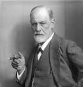

Sigmund Freud, the father of psychoanalysis, published The Interpretation of Dreams in 1899. In this book, he explains his theory of the unconscious with regard to dream interpretation and explores what would later become the notion of the Oedipus complex. After at least eight revisions, Freud introduced a lengthy section in the third edition that took dream symbolism literally, drawing on Wilhelm Stekel's ideas. "Understanding such as this falls to one's lot but once in a lifetime," Freud said of this study. The book, which was first published in 1900, had a 600-copy edition that took eight years to sell out. Seven further versions of The Interpretation of Dreams were released during Freud's lifetime as the book gained popularity. Freud also wrote an abridged version of the book titled On Dreams due to its length and intricacy. The original text is frequently cited as one of Freud's most important pieces of writing.
